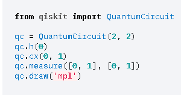
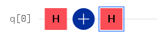

想定問題集#
問題１#
位相回転するゲートは？#
Xゲート
Yゲート
Zゲート
Tゲート
Sゲート
回答1#
答えはこちら
Z軸の周りを回転することを位相回転（Phase flip）というZゲート
Tゲート
ゲート
問題２#
ビット反転するゲートは？#
Xゲート
Zゲート
Tゲート
Sゲート
回答2#
パウリX行列をつかうと|0>が|1>に|1>が|0>になる。これをビット反転（bit flip）という.#
Xゲート
問題３#
下記を実行すると、量子状態はどうなりますか1？#

回答３#
アダマールゲートのあとCCXゲートを通している事を確認してください#
Bell状態になります
問題４#
下記を実行すると、量子状態はどうなりますか2？#

回答４#
#
GHZ状態になります
問題５#
下記と等価なゲートは1？#

回答５#
#
Zゲートになります
問題６#
下記と等価なゲートは2？#

回答６#
#
Xゲートになります
問題７#
Sゲートのフェーズの値は？#
π/2
π/4
π/8
π
回答７#
#
π/2
問題８#
Tゲートのフェーズの値は？#
π/2
π/4
π/8
π
回答8#
#
π/4
問題９#
QuantumCircuit 正しくない記述は？#
QuantumCircuit(QuantumRegister(4))
QuantumCircuit(QuantumRegister(4), ClassicalRegister(3))
QuantumCircuit(QuantumRegister(4, ‘qr0’), QuantumRegister(2, ‘qr1’))
QuantumCircuit（4,4)
QuantumCircuit（cr,qr)
qr = QuantumRegister(2) cr = ClassicalRegister(2) qc = QuantumCircuit(cr[0:2],qr[0:2])
回答９#
#
すべて正しい記述です。
問題10#
Measure 正しくない記述は？#
circuit = QuantumCircuit(2, 2) circuit.measure([0,1], [0,1])
circuit = QuantumCircuit(2, 2) circuit.measure(0, 0) circuit.measure(1, 1)
qreg = QuantumRegister(2, “qreg”) creg = ClassicalRegister(2, “creg”) circuit = QuantumCircuit(qreg, creg) circuit.measure(qreg, creg)
circuit = QuantumCircuit(qreg, creg) circuit.measure(qreg[0], creg[0])
問題10 Measure 正しくない記述は？